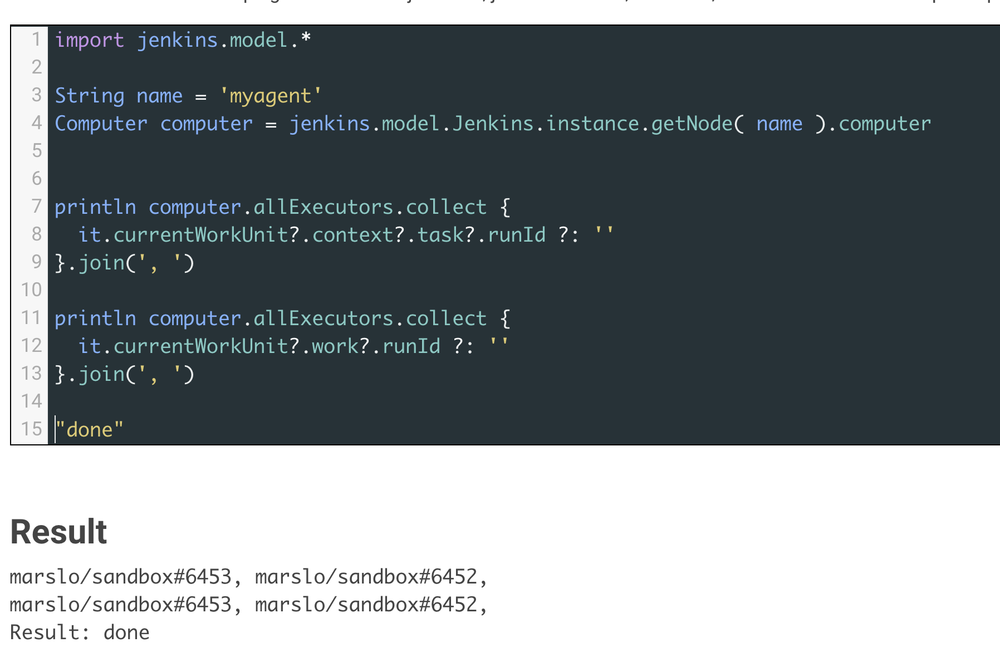

Table of Contents generated with DocToc
get information
API:
references:
- Display Information About Nodes
- jenkins-scripts/scriptler/showAgentJavaVersion.groovy
- jenkins-scripts/scriptler/checkNodesLauncherVersion.groovy
- Skip Jenkins Pipeline Steps If Node Is Offline
sample scripts:
get all
get all agents including Jenkins master:
jenkins.model.Jenkins.instance.computersjenkins.model.Jenkins.instance.get().computers
jenkins.model.Jenkins.instance.computers.each { agent ->
println "${agent.displayName} : ${agent.class} : ${agent.class.superclass}"
println " >> is master : ${jenkins.model.Jenkins.MasterComputer.isInstance(agent)}"
println " >> is cloud : ${hudson.slaves.AbstractCloudComputer.isInstance(agent)} "
}
or
jenkins.model.Jenkins.instance.get().computers.each { agent ->
println "${agent.displayName} : ${agent.class} : ${agent.class.superclass}"
println " >> is master : ${jenkins.model.Jenkins.MasterComputer.isInstance(agent)}"
println " >> is cloud : ${hudson.slaves.AbstractCloudComputer.isInstance(agent)} "
}
Computer and Node
hudson.model.Computer->hudson.model.Nodeviacomputer.setNode()hudson.model.Node->hudson.model.Computervianode.toComputer()
example for Computer Object
get description
Jenkins.instance.getNode('<agent-name>').toComputer().descriptionget all info
String agentName = 'marslo-test' Jenkins.instance.computers.findAll { computer -> agentName == computer.name }.each { computer -> String moreinfo = computer.online ? "properties : ${computer.getSystemProperties().collect { k, v -> "$k=$v" }.join('\n\t\t\t>>> ')}" : " logs : ${computer.getLog()}" println """ ~~> ${computer.displayName} : class : ${computer.getClass()} class : ${computer.class.superclass?.simpleName} online? : ${computer.online} description : ${computer.description} connectTime : ${computer.connectTime} offlineCauseReason : ${computer.offlineCauseReason} executor : ${computer.numExecutors} ${moreinfo} """ }- result
~~> marslo-test : class : class hudson.slaves.SlaveComputer class : Computer online? : false description : marslo test agent offline connectTime : 1620478291102 offlineCauseReason : This agent is offline because Jenkins failed to launch the agent process on it. executor : 1 logs : SSHLauncher{host='1.2.3.4', port=22, credentialsId='DevOpsSSHCredential', jvmOptions='', javaPath='', prefixStartSlaveCmd='', suffixStartSlaveCmd='', launchTimeoutSeconds=30, maxNumRetries=5, retryWaitTime=30, sshHostKeyVerificationStrategy=hudson.plugins.sshslaves.verifiers.NonVerifyingKeyVerificationStrategy, tcpNoDelay=true, trackCredentials=true} [05/08/21 05:51:31] [SSH] Opening SSH connection to 1.2.3.4:22. connect timed out SSH Connection failed with IOException: "connect timed out", retrying in 30 seconds. There are 5 more retries left. connect timed out ...
- result
example for Node Object
import hudson.slaves.*
DumbSlave agent = jenkins.model.Jenkins.instance.getNode( 'marslo-test' )
println """
display name : ${agent.getDisplayName()}
node name : ${agent.getNodeName()}
description : ${agent.getNodeDescription()}
executor : ${agent.getNumExecutors()}
label string : ${agent.getLabelString()}
node mode : ${agent.getMode()}
hold off launch : ${agent.isHoldOffLaunchUntilSave()}
"""
- result
display name : marslo-test node name : marslo-test description : marslo test agent offline executor : 1 label string : node mode : NORMAL hold off launch : true
setup
hold off launchvia:agent.holdOffLaunchUntilSave = true
node->computerString agent = 'marslo-test' Jenkins.instance.getNode(agent).toComputer().isOnline()or
hudson.model.Hudson.instance.getNode(agent).toComputer().isOnline()or get log
println jenkins.model.Jenkins.instance.getNode( 'marslo-test' ).toComputer().getLog() // result SSHLauncher{host='1.2.3.4', port=22, credentialsId='DevOpsSSHCredential', jvmOptions='', javaPath='', prefixStartSlaveCmd='', suffixStartSlaveCmd='', launchTimeoutSeconds=30, maxNumRetries=5, retryWaitTime=30, sshHostKeyVerificationStrategy=hudson.plugins.sshslaves.verifiers.NonVerifyingKeyVerificationStrategy, tcpNoDelay=true, trackCredentials=true} [05/24/21 03:59:16] [SSH] Opening SSH connection to 1.2.3.4:22. connect timed out SSH Connection failed with IOException: "connect timed out", retrying in 30 seconds. There are 5 more retries left.
get projects tied to agent
reference:
import hudson.model.*
import jenkins.model.*
import hudson.slaves.*
String name = 'myagent'
Computer computer = jenkins.model.Jenkins.instance.getNode(name)?.computer ?: null
println computer.allExecutors.collect {
it.currentWorkUnit?.work?.runId ?: ''
}.join(', ') ?: ''
result 
or
println computer.getAllExecutors().collect { it.getCurrentWorkUnit()?.work?.runId ?: '' }or via
<WorkUnitContext> hudson.model.queue.WorkUnit.contextprintln computer.allExecutors.collect { it.currentWorkUnit?.context?.task?.runId ?: '' }get label itself
might helps: Label Linked Jobs
jenkins.model.Jenkins.instance.getNode(name)?.computer?.allExecutors.each { println it.currentWorkUnit.work.getClass() println '.................' println it.currentWorkUnit.work.label println it.currentWorkUnit.work.runId println '.................' println it.currentWorkUnit?.context?.task?.label println it.currentWorkUnit?.context?.task?.runId println '.................' println it.currentWorkUnit.work.getOwnerTask().getClass() println it.currentWorkUnit.work.getOwnerTask().getFullDisplayName() println '.................' } // result class org.jenkinsci.plugins.workflow.support.steps.ExecutorStepExecution$PlaceholderTask ................. MY_AGENT_001 marslo/sandbox#6460 ................. MY_AGENT_001 marslo/sandbox#6460 ................. class org.jenkinsci.plugins.workflow.job.WorkflowJob marslo » sandbox ................. Result: [Thread[Executor #0 for MY_AGENT_001 : executing PlaceholderExecutable:ExecutorStepExecution.PlaceholderTask{runId=marslo/sandbox#6460,label=CI-WP-CD-RPI005,context=CpsStepContext[3:node]:Owner[marslo/sandbox/6460:marslo/sandbox #6460],cookie=null,auth=null},5,]]
get number of executor of agents
jenkins.model.Jenkins.instance.getNode(name)?.computer?.allExecutors?.size
get ip address of node
import hudson.model.Computer.ListPossibleNames
println jenkins.model
.Jenkins.instance
.getNode( '<agent_name>' ).computer
.getChannel().call(new ListPossibleNames())
or
println jenkins.model
.Jenkins.instance
.getNode( '<agent_name>' ).computer
.getHostName()
println InetAddress.localHost.hostAddress
get agent environment variable
for (slave in jenkins.model.Jenkins.instance.slaves) {
println(slave.name + ": ")
def props = slave.nodeProperties.getAll(hudson.slaves.EnvironmentVariablesNodeProperty.class)
for (prop in props) {
for (envvar in prop.envVars) {
println envvar.key + " -> " + envvar.value
}
}
}
get a list of all Jenkins nodes assigned with label
def nodes = jenkins.model.Jenkins.get().computers
.findAll{ it.node.labelString.contains(label) }
.collect{ it.node.selfLabel.name }
- or
@NonCPS def hostNames(label) { def nodes = [] jenkins.model.Jenkins.get.computers.each { c -> if (c.node.labelString.contains(label)) { nodes.add(c.node.selfLabel.name) } } return nodes } - or
Jenkins.instance.getLabel('my-label').getNodes().collect{ it.getNodeName() }
check how many cloud agent running
println jenkins.model.Jenkins.instance.getNodes().findAll {
[ 'AbstractCloudSlave', 'AbstractCloudComputer' ].contains(it.class.superclass?.simpleName)
}.size()
Managing Nodes
Monitor and Restart Offline Agents
import hudson.node_monitors.*
import hudson.slaves.*
import java.util.concurrent.*
jenkins = Jenkins.instance
import javax.mail.internet.*;
import javax.mail.*
import javax.activation.*
def sendMail (agent, cause) {
message = agent + " agent is down. Check http://JENKINS_HOSTNAME:JENKINS_PORT/computer/" + agent + "\nBecause " + cause
subject = agent + " agent is offline"
toAddress = "JENKINS_ADMIN@YOUR_DOMAIN"
fromAddress = "JENKINS@YOUR_DOMAIN"
host = "SMTP_SERVER"
port = "SMTP_PORT"
Properties mprops = new Properties();
mprops.setProperty("mail.transport.protocol","smtp");
mprops.setProperty("mail.host",host);
mprops.setProperty("mail.smtp.port",port);
Session lSession = Session.getDefaultInstance(mprops,null);
MimeMessage msg = new MimeMessage(lSession);
//tokenize out the recipients in case they came in as a list
StringTokenizer tok = new StringTokenizer(toAddress,";");
ArrayList emailTos = new ArrayList();
while(tok.hasMoreElements()) {
emailTos.add(new InternetAddress(tok.nextElement().toString()));
}
InternetAddress[] to = new InternetAddress[emailTos.size()];
to = (InternetAddress[]) emailTos.toArray(to);
msg.setRecipients(MimeMessage.RecipientType.TO,to);
InternetAddress fromAddr = new InternetAddress(fromAddress);
msg.setFrom(fromAddr);
msg.setFrom(new InternetAddress(fromAddress));
msg.setSubject(subject);
msg.setText(message)
Transport transporter = lSession.getTransport("smtp");
transporter.connect();
transporter.send(msg);
}
def getEnviron(computer) {
def env
def thread = Thread.start("Getting env from ${computer.name}", { env = computer.environment })
thread.join(2000)
if (thread.isAlive()) thread.interrupt()
env
}
def agentAccessible(computer) {
getEnviron(computer)?.get('PATH') != null
}
def numberOfflineNodes = 0
def numberNodes = 0
for (agent in jenkins.getNodes()) {
def computer = agent.computer
numberNodes ++
println ""
println "Checking computer ${computer.name}:"
def isOK = (agentAccessible(computer) && !computer.offline)
if (isOK) {
println "\t\tOK, got PATH back from agent ${computer.name}."
println('\tcomputer.isOffline: ' + computer.isOffline());
println('\tcomputer.isTemporarilyOffline: ' + computer.isTemporarilyOffline());
println('\tcomputer.getOfflineCause: ' + computer.getOfflineCause());
println('\tcomputer.offline: ' + computer.offline);
} else {
numberOfflineNodes ++
println " ERROR: can't get PATH from agent ${computer.name}."
println('\tcomputer.isOffline: ' + computer.isOffline());
println('\tcomputer.isTemporarilyOffline: ' + computer.isTemporarilyOffline());
println('\tcomputer.getOfflineCause: ' + computer.getOfflineCause());
println('\tcomputer.offline: ' + computer.offline);
sendMail(computer.name, computer.getOfflineCause().toString())
if (computer.isTemporarilyOffline()) {
if (!computer.getOfflineCause().toString().contains("Disconnected by")) {
computer.setTemporarilyOffline(false, agent.getComputer().getOfflineCause())
}
} else {
computer.connect(true)
}
}
}
println ("Number of Offline Nodes: " + numberOfflineNodes)
println ("Number of Nodes: " + numberNodes)
Create a Permanent Agent from Groovy Console
references:
useful libs:
import jenkins.model.*import hudson.slaves.*import hudson.slaves.NodePropertyDescriptorimport hudson.plugins.sshslaves.*import hudson.plugins.sshslaves.verifiers.*import hudson.model.*import hudson.model.Nodeimport hudson.model.Queueimport hudson.model.queue.CauseOfBlockageimport hudson.slaves.EnvironmentVariablesNodeProperty.Entryimport java.util.ArrayListimport com.synopsys.arc.jenkinsci.plugins.jobrestrictions.nodes.JobRestrictionPropertyimport com.synopsys.arc.jenkinsci.plugins.jobrestrictions.Messagesimport com.synopsys.arc.jenkinsci.plugins.jobrestrictions.restrictions.JobRestrictionimport com.synopsys.arc.jenkinsci.plugins.jobrestrictions.restrictions.JobRestrictionBlockageCauseimport hudson.Extensionimport hudson.slaves.NodeProperty
import org.kohsuke.stapler.DataBoundConstructorSSH host verification strategy:
// Known hosts file Verification Strategy new KnownHostsFileKeyVerificationStrategy() // Manually provided key Verification Strategy new ManuallyProvidedKeyVerificationStrategy("<your-key-here>") // Manually trusted key Verification Strategy new ManuallyTrustedKeyVerificationStrategy(false /*requires initial manual trust*/) // Non verifying Verification Strategy new NonVerifyingKeyVerificationStrategy()
import hudson.model.*
import jenkins.model.*
import hudson.slaves.*
import hudson.slaves.EnvironmentVariablesNodeProperty.Entry
import hudson.plugins.sshslaves.verifiers.*
// Pick one of the strategies from the comments below this line
// SshHostKeyVerificationStrategy hostKeyVerificationStrategy = new KnownHostsFileKeyVerificationStrategy()
//= new KnownHostsFileKeyVerificationStrategy() // Known hosts file Verification Strategy
//= new ManuallyProvidedKeyVerificationStrategy("<your-key-here>") // Manually provided key Verification Strategy
//= new ManuallyTrustedKeyVerificationStrategy(false /*requires initial manual trust*/) // Manually trusted key Verification Strategy
//= new NonVerifyingKeyVerificationStrategy() // Non verifying Verification Strategy
// Define a "Launch method": "Launch agents via SSH"
ComputerLauncher launcher = new hudson.plugins.sshslaves.SSHLauncher(
"1.2.3.4", // Host
22, // Port
"MyCredentials", // Credentials
(String)null, // JVM Options
(String)null, // JavaPath
(String)null, // Prefix Start Agent Command
(String)null, // Suffix Start Agent Command
(Integer)null, // Connection Timeout in Seconds
(Integer)null, // Maximum Number of Retries
(Integer)null, // The number of seconds to wait between retries
new NonVerifyingKeyVerificationStrategy() // Host Key Verification Strategy
)
// Define a "Permanent Agent"
Slave agent = new DumbSlave(
"marslo-test",
"/home/devops",
launcher)
agent.nodeDescription = "marslo test agent"
agent.numExecutors = 1
agent.labelString = ""
agent.mode = Node.Mode.NORMAL
agent.retentionStrategy = new RetentionStrategy.Always()
List<Entry> env = new ArrayList<Entry>();
env.add(new Entry("key1","value1"))
env.add(new Entry("key2","value2"))
EnvironmentVariablesNodeProperty envPro = new EnvironmentVariablesNodeProperty(env);
agent.getNodeProperties().add(envPro)
// Create a "Permanent Agent"
Jenkins.instance.addNode(agent)
return "Node has been created successfully."
-
import hudson.model.* import jenkins.model.* import hudson.slaves.* import hudson.plugins.sshslaves.verifiers.* import hudson.slaves.EnvironmentVariablesNodeProperty.Entry String name = 'marslo-test' String description = 'marslo test agent' String rootDir = '/home/marslo' String nodeLabel = '' String ip = '1.2.3.4' String credential = 'MyCredential' Map envVars = [ 'key1' : 'value1', 'key2' : 'value2' ] SshHostKeyVerificationStrategy hostKeyVerificationStrategy = new NonVerifyingKeyVerificationStrategy() List<Entry> env = new ArrayList<Entry>(); envVars.each { k, v -> env.add(new Entry(k, v)) } EnvironmentVariablesNodeProperty envPro = new EnvironmentVariablesNodeProperty(env); Slave agent = new DumbSlave( name, description, rootDir, "1", Node.Mode.NORMAL, nodeLabel, new hudson.plugins.sshslaves.SSHLauncher( ip, // Host 22, // Port credential, // Credentials (String)null, // JVM Options (String)null, // JavaPath (String)null, // Prefix Start Agent Command (String)null, // Suffix Start Agent Command (Integer)null, // Connection Timeout in Seconds (Integer)null, // Maximum Number of Retries (Integer)null, // The number of seconds to wait between retries hostKeyVerificationStrategy // Host Key Verification Strategy ) , new RetentionStrategy.Always(), new LinkedList() ) agent.getNodeProperties().add(envPro) Jenkins.instance.addNode(agent)
update agent label
references:
get label
def getLabel( String label ){ for ( node in jenkins.model.Jenkins.instance.nodes ) { if ( node.getNodeName().toString().equals(label) ) { return node.getLabelString() } } }or
def getLabel( String label ){ jenkins.model.Jenkins.instance.nodes.find { it.getNodeName().toString().equals(label) }.getLabelString() }update label
def updateLabel( String agent, String label ) { def node = jenkins.model.Jenkins.instance.getNode( agent ) if ( node ) { node.setLabelString(label) node.save() } }
jenkins-scripts/scriptler/disableSlaveNodeStartsWith.groovy
disable agent
references:
disconnect agent
reconnect:
agent.computer.connect( true )jenkins.model.Jenkins.instance.getNode( name ).computer.connect( true )reference:
import hudson.slaves.*
String name = 'marslo-test'
String cause = "disconnet the agent automatically via ${env.BUILD_URL}"
DumbSlave agent = jenkins.model.Jenkins.instance.getNode( name )
if ( agent
&&
! ['AbstractCloudComputer', 'AbstractCloudSlave'].contains(agent.computer?.class.superclass?.simpleName)
&&
! (agent.computer instanceof jenkins.model.Jenkins.MasterComputer)
) {
Boolean online = agent.computer.isOnline()
Boolean busy = agent.computer.countBusy() != 0
if( online && !busy ) {
agent.computer.disconnect( new OfflineCause.ChannelTermination(new UnsupportedOperationException(cause)) )
}
}
offline agent
offline agent is normally for workspace cleanup
reference:
bring node online
computer.setTemporarilyOffline( false, null )
import hudson.slaves.*
String name = 'marslo-test'
String cause = "temporary offline for the agent workspace cleanup"
DumbSlave agent = jenkins.model.Jenkins.instance.getNode( name )
if ( agent
&&
! ['AbstractCloudComputer', 'AbstractCloudSlave'].contains(agent.computer?.class.superclass?.simpleName)
&&
! (agent.computer instanceof jenkins.model.Jenkins.MasterComputer)
) {
Boolean online = agent.computer.isOnline()
Boolean busy = agent.computer.countBusy() != 0
if( online && !busy ) {
agent.computer.setTemporarilyOffline( true,
new hudson.slaves.OfflineCause.ByCLI("disk cleanup on slave")
)
}
}
delete agent
references:
def isAgentExists( String name ) {
jenkins.model.Jenkins.instance.getNodes().any { name == it.computer?.name }
}
def removeAgent( String name ) {
Boolean deleted = false
DumbSlave agent = jenkins.model.Jenkins.instance.getNode( name )
if ( agent
&&
! AbstractCloudComputer.isInstance( agent.computer )
&&
! AbstractCloudSlave.isInstance( agent.computer )
&&
! ( agent.computer instanceof jenkins.model.Jenkins.MasterComputer )
) {
Boolean online = agent.computer.isOnline()
Boolean busy = agent.computer.countBusy() != 0
if ( !busy ) {
println """
"${online ? ' offline and' : ''} remove agent ${name} :"
display name : ${agent.getDisplayName()}
description : ${agent.getNodeDescription()}
executor : ${agent.getNumExecutors()}
node mode : ${agent.getMode()}
online? : ${online}
busy? : ${busy}
offline cause? : ${agent.computer.getOfflineCause()}
"""
if ( online ) {
agent.computer.setTemporarilyOffline( true,
new hudson.slaves.OfflineCause.ByCLI('offline due to agent will be removed automatically')
)
Thread.sleep( 5*1000 )
}
agent.computer.doDoDelete()
deleted = ! isAgentExists( name )
println( "INFO: agent ${name} ${deleted ? 'has been successfully removed' : 'failed been removed'} from ${env.JENKINS_URL}computer")
} else {
println("WARN: the agent ${name} cannot be removed due to project is tie to it" )
}
} else {
println('WARN: cloud agent or Jenkins master cannot be removed!' )
}
return deleted
}